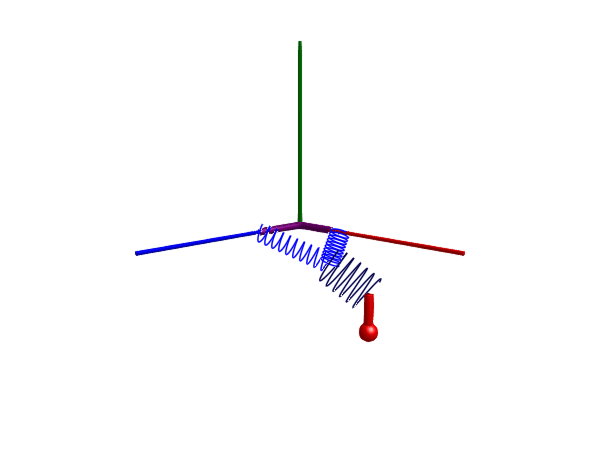

Three springs

This example mirrors that of the modelica three-springs and demonstrates that we can connect mass-less force elements together.
The example connects three springs together in a single point. The springs are all massless and do normally not have any state variables, but we can insist on one of the springs being stateful, in this case, we must tell the lower spring component to act as root by setting fixed_rotation_at_frame_a = fixed_rotation_at_frame_b = true.
using Multibody
using ModelingToolkit
using Plots
using JuliaSimCompiler
using OrdinaryDiffEq
t = Multibody.t
D = Differential(t)
world = Multibody.world
systems = @named begin
body1 = Body(m = 0.8, I_11 = 0.1, I_22 = 0.1, I_33 = 0.1, r_0 = [0.5, -0.3, 0],
r_cm = [0, -0.2, 0], isroot=true, quat=true)
bar1 = FixedTranslation(r = [0.3, 0, 0])
bar2 = FixedTranslation(r = [0, 0, 0.3])
spring1 = Multibody.Spring(c = 20, m = 0, s_unstretched = 0.1, fixed_rotation_at_frame_b=true,
r_rel_0 = [-0.2, -0.2, 0.2], radius=0.05, num_windings=10)
spring2 = Multibody.Spring(c = 40, m = 0, s_unstretched = 0.1, color=[0,0,0.3,1])
spring3 = Multibody.Spring(c = 20, m = 0, s_unstretched = 0.1, radius=0.05, num_windings=10)
end
eqs = [connect(world.frame_b, bar1.frame_a)
connect(world.frame_b, bar2.frame_a)
connect(bar1.frame_b, spring1.frame_a)
connect(bar2.frame_b, spring3.frame_a)
connect(spring2.frame_b, body1.frame_a)
connect(spring3.frame_b, spring1.frame_b)
connect(spring2.frame_a, spring1.frame_b)]
@named model = ODESystem(eqs, t, systems = [world; systems])
ssys = structural_simplify(IRSystem(model))
prob = ODEProblem(ssys, [], (0, 10))
sol = solve(prob, Rodas4())
@assert SciMLBase.successful_retcode(sol)
Plots.plot(sol, idxs = [body1.r_0...])3D animation
Multibody.jl supports automatic 3D rendering of mechanisms, we use this feature to illustrate the result of the simulation below:
import GLMakie
Multibody.render(model, sol; filename = "three_springs.gif") # Use "three_springs.mp4" for a video file